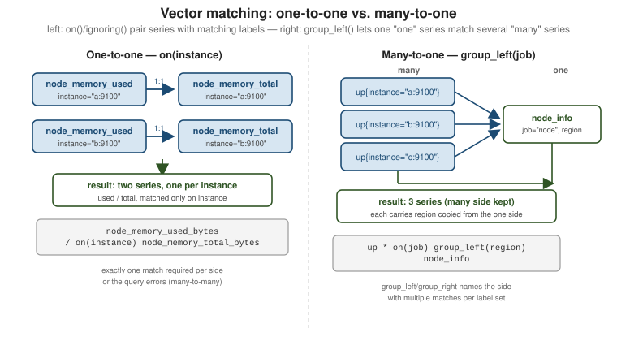

PromQL: Operators & Aggregation
|
This content was generated with the assistance of AI and should be verified against the official documentation before being relied on in production. |
PromQL: Basics & Selectors covered selecting individual time series. This page covers what PromQL does once two vectors need to be combined or one vector needs to be collapsed: arithmetic, comparison and logical/set binary operators; vector matching, the label-based rule that decides which series on the left pair with which series on the right; and the aggregation operators that reduce many series down to fewer, grouped by label. See Operators for the authoritative reference this page works from.
The worked results below come from the orders-api service of this section’s running example (source in
Instrumenting Applications) scraped by a
Prometheus 3.5 server in Docker every five seconds; they differ from run to run but the shapes are real.
Arithmetic operators
+ - * / % ^ work between two scalars, between a scalar and a vector (applied to every sample), or between two instant vectors (matched series-by-series — see Vector matching below):
# scalar <op> vector: convert a byte gauge to megabytes
node_memory_MemAvailable_bytes / 1024 / 1024
# vector <op> vector: fraction of memory in use per instance
1 - node_memory_MemAvailable_bytes / node_memory_MemTotal_bytes% is floating-point remainder and ^ is exponentiation (right-associative, so 2 ^ 3 ^ 2 is 2 ^ (3 ^ 2), which the server evaluates to 512; 1 + 2 * 3 is 7, and -2 ^ 2 is -4 because ^ binds
tighter than the unary minus). Every arithmetic operator between two vectors requires them to be matched first — an
unqualified / above only works because both sides share exactly the same label set apart from the
metric name; as soon as the label sets diverge, on/ignoring become necessary.
A worked arithmetic query on the example service is the share of traffic each handler receives. Dividing each handler’s rate by the total rate needs the group modifiers explained later, but the arithmetic is plain division:
sum by (handler) (rate(http_requests_total[1m])) / ignoring(handler) group_left sum(rate(http_requests_total[1m])){handler="/orders"} 0.7493
{handler="/health"} 0.2507And the classic error ratio — failed requests over all requests, per handler — is a one-to-one match on
the shared handler label:
sum by (handler) (rate(http_requests_total{status="500"}[1m]))
/ sum by (handler) (rate(http_requests_total[1m])){handler="/orders"} 0.0911Only /orders appears in the result: /health has no status="500" series, so the left side has nothing
to pair with it and the right-hand /health series is dropped. That silent disappearance is a classic
source of "my alert never fires" bugs; the usual remedy is ... or vector(0) on the numerator when a zero
is wanted. On the example service
sum(rate(http_requests_total{handler="/health",status="500"}[1m])) or vector(0) returns a single
series with value 0 where the left side alone returns an empty vector.
Comparison operators
== != > < >= <= compare a vector against a scalar or against another vector, and by default they
filter: the result keeps only the samples for which the comparison is true, with their original
value.
# filtering form: only series currently reporting down
up == 0
# only instances above 80% CPU
100 * (1 - avg by (instance) (rate(node_cpu_seconds_total{mode="idle"}[5m]))) > 80Appending the bool modifier switches a comparison from a filter to a projection: every input
series is kept, with its value replaced by 1 (true) or 0 (false) instead of being dropped:
# one series per target, value 1 if up, 0 if down -- good for sum()/Grafana stat panels
up == bool 1
# count how many targets in a job are currently down
sum(up{job="orders-api"} == bool 0)bool is mandatory when both operands are scalars (1 > bool 2, since a scalar has nothing to filter), and
optional for vectors, where it is what makes a comparison usable as an arithmetic input rather than a row
filter. The difference is visible on the example service: sum(rate(http_requests_total[1m])) > 5 returned
the value 13.27, while sum(rate(http_requests_total[1m])) > bool 5 returned 1. A filtering comparison
whose condition is false returns an empty vector, which is exactly what an alerting rule needs (an empty
result means "not firing"), while a bool comparison always returns a value and so never "does not
match".
Logical and set operators
and, or and unless work only between two instant vectors, and operate on the label sets of
matching series rather than on values — they never touch a series' numeric value, only whether it
is kept:
# and: keep left-hand series that have a matching series on the right (by label set, ignoring value)
node_filesystem_avail_bytes / node_filesystem_size_bytes < 0.1
and node_filesystem_readonly == 0
# low disk space, but only where the filesystem isn't already read-only
# or: union -- left-hand series, plus any right-hand series with no match on the left
rate(http_requests_total{status=~"5.."}[5m]) > 0
or on(instance) up == 0
# error-rate series, plus targets that are simply down (no error series to compare)
# unless: left-hand series with NO matching series on the right
ALERTS{alertstate="firing"} unless on(alertname, instance) ALERTS{alertstate="pending"}
# firing alerts that are not also currently pending elsewhereThe precedence of the binary operators, highest to lowest, is:
| Level | Operators |
|---|---|
1 (tightest) |
|
2 |
|
3 |
|
4 |
|
5 |
|
6 (loosest) |
|
Operators of the same level group from left to right (except ^). Parenthesize rather than rely on
memorizing this when a query mixes categories, as the examples above do.
Vector matching
Every operator between two instant vectors needs a rule for which sample on the left pairs with
which sample on the right, because each side can carry a different label set. PromQL calls this
vector matching, and it is one-to-one by default: it strips the metric name from both sides, then
matches series whose remaining label sets are identical. on(<labels>) narrows that match to only
the named labels; ignoring(<labels>) does the opposite, matching on every label except the named
ones. Exactly one of the two may be used per operator.
# on(): match only on instance, ignore every other differing label
(node_memory_MemTotal_bytes - node_memory_MemAvailable_bytes) / on(instance) node_memory_MemTotal_bytes
# ignoring(): match on everything except handler -- each handler's rate divided by the one total
sum by (handler) (rate(http_requests_total[1m])) / ignoring(handler) group_left sum(rate(http_requests_total[1m]))If, after applying on/ignoring, more than one series on either side shares the same matched
label set, the query is a many-to-many match and PromQL refuses it with a "multiple matches for
labels" error — vector matching only ever resolves one-to-one or explicit many-to-one.
Both failure modes can be reproduced on the example service. Dividing two metrics whose label sets differ
returns an empty result, not an error, because no pair of series has identical labels once the metric
name is dropped (the counter has method and status, the histogram count does not):
rate(http_requests_total[1m]) / rate(http_request_duration_seconds_count[1m])Narrowing the match to the shared label produces an error, because two counter series (200 and 500)
now match each handler:
rate(http_requests_total[1m]) / on(handler) rate(http_request_duration_seconds_count[1m]){"status":"error","errorType":"execution","error":"multiple matches for labels: many-to-one matching must be explicit (group_left/group_right)"}The cure is to say which side is the "many" side, or to aggregate first so that each side has one series
per key, as the error-ratio query above does with sum by (handler).
given?"} B -- "no" --> C["Drop metric name;
match on all remaining labels"] B -- "on(l)" --> D["Match on l only"] B -- "ignoring(l)" --> E["Match on all labels except l"] C --> F{"At most one series per side
for each match key?"} D --> F E --> F F -- yes --> G["One-to-one: result keeps
the left side's labels"] F -- "many on one side,
group_left or group_right" --> H["Many-to-one: result keeps the
many side's labels plus copies"] F -- "many without a modifier" --> I["Error: multiple matches
for labels"]

Many-to-one and one-to-many: group_left / group_right
A many-to-one match is allowed, but only when made explicit: the side with multiple matches per
matched label set is named with group_left(<labels>) or group_right(<labels>), and any extra
labels listed there are copied from the single-match ("one") side onto every result on the
many-match side. group_left means "the left side is many"; group_right means "the right side is
many."
A common use is joining a metric that has one series per label combination (like up) against an
info metric — a metric whose value is meaningless (always 1) and which exists only to attach extra
labels via its label set. The example service exposes one, orders_build_info, created by the client
library’s Info helper:
orders_build_info{env="lab", instance="host.docker.internal:28101", job="orders-api", region="eu-west-1", version="1.4.2"} 1Joining it onto up (many series per job in general, one orders_build_info per instance) copies the
extra labels onto the result:
up{job="orders-api"} * on(instance) group_left(version, region) orders_build_info{env="lab", instance="host.docker.internal:28101", job="orders-api", region="eu-west-1", version="1.4.2"} 1Matching on job instead (* on(job) group_left(region) orders_build_info) works the same way and is the
right choice when the info metric is exposed once per job rather than once per instance. For targets that
do not expose an info metric, label_replace() (see
PromQL: Functions) can build labels at query time.
* here is just a convenient carrier — up is already 0 or 1, so multiplying by the info
series' value (1) leaves it unchanged while group_left(version, region) does the actual work of
attaching those labels to each of the many up series. The same pattern (* on(...) group_left(...)) is the
standard way to enrich kube_pod_info, kube_node_labels, and similar Kubernetes metadata metrics
onto per-container or per-node series in
Containers & Kubernetes
Monitoring. Without group_left/group_right, PromQL cannot tell that a many-to-one join was
intended and raises the many-to-many error instead.
Aggregation operators
Aggregation operators take one instant vector and reduce it, grouped by label, to fewer output series — collapsing per-instance or per-pod series down to a per-job or fleet-wide view.
| Operator | Reduces to |
|---|---|
|
sum of the values in each group |
|
average of the values in each group |
|
smallest / largest value in each group |
|
number of series in each group (not their values) |
|
number of series sharing each distinct value, emitted as a new label |
|
the k series with the highest / lowest value in each group, values kept |
|
the phi-quantile (0 to 1) of the values in each group, interpolated |
|
standard deviation / variance of the values in each group |
9.04"] B["handler=/orders status=500
0.91"] C["handler=/health status=200
3.33"] end IN --> D["sum by (handler)"] D --> E["handler=/orders
9.95"] D --> F["handler=/health
3.33"] IN --> G["sum without (status)"] G --> H["same two groups, but other
labels (job, instance) are kept"] IN --> I["sum"] I --> J["one series, no labels
13.27"]
# total request rate across every instance of a job
sum(rate(http_requests_total{job="orders-api"}[5m]))
# average CPU utilization per job, across all instances
avg by (job) (100 * (1 - rate(node_cpu_seconds_total{mode="idle"}[5m])))
# the 5 instances with the most memory in use right now
topk(5, node_memory_MemTotal_bytes - node_memory_MemAvailable_bytes)
# how many targets report each up value (0 or 1), per job
count_values("up_value", up) by (job)
# p50 (median) request rate across instances, per job
quantile by (job) (0.5, rate(http_requests_total[5m]))Real results for the example service make the grouping rules concrete. All of these evaluate the same
inner expression, rate(http_requests_total[1m]), which has three series:
| Query | Series returned | Values |
|---|---|---|
|
1 (no labels) |
|
|
2 |
|
|
3 |
9.04, 0.91 and 3.33 |
|
2 |
same values, labels |
|
2 |
|
|
1 |
|
|
1 |
|
|
1 |
|
group by (job) (http_requests_total) returns 1 per job: group ignores values and is the cheapest
way to produce one series per label combination, for example to count distinct label values with
count(group by (handler) (...)).
quantile() aggregates across series — it does not compute a percentile from within one
histogram’s buckets. For a latency percentile like p99 from a native or classic histogram, use
histogram_quantile() instead; see
PromQL: Functions.
by and without
Every aggregation operator can take a by (<labels>) or without (<labels>) clause to control
grouping. by keeps only the named labels on the output (grouping series that share those
values); without does the reverse, dropping the named labels and keeping every other label,
grouping series that agree on everything else:
# by: output has exactly one series per job, with only the job label kept
sum by (job) (rate(http_requests_total[5m]))
# without: drop instance (and the metric name); keep every other label (job, method, status, ...)
sum without (instance) (rate(http_requests_total[5m]))Omitting both clauses aggregates everything into a single output series with no labels at all — almost never what’s wanted once more than one job or environment is being scraped, so most real
queries name a by/without clause explicitly. topk/bottomk behave slightly differently from
the rest of the table: they keep the original labels on every returned series (not just the
grouping labels), since the point is to identify which specific series are largest or smallest, not
to collapse them.
Continue with PromQL: Functions for rate(),
histogram_quantile(), label_replace() and the rest of PromQL’s function library, or see
Recording & Alerting Rules for turning
queries like these into named, precomputed series and alerts.